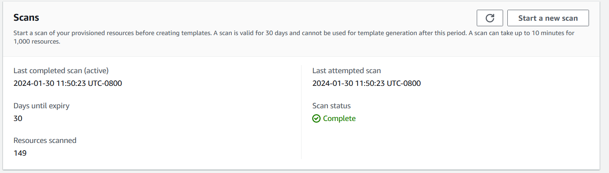

Terjemahan disediakan oleh mesin penerjemah. Jika konten terjemahan yang diberikan bertentangan dengan versi bahasa Inggris aslinya, utamakan versi bahasa Inggris.
Menghasilkan template untuk sumber daya yang ada
Dengan generator AWS CloudFormation IAC (infrastruktur sebagai pembuat kode), Anda dapat membuat template menggunakan AWS sumber daya yang disediakan di akun Anda yang belum dikelola oleh. CloudFormation Gunakan templat untuk mengimpor sumber daya ke CloudFormation atau mereplikasi sumber daya di akun atau Wilayah baru.
Proses pembuatan IAc terdiri dari beberapa langkah:
-
Mulai pemindaian akun Anda.
-
Buat template, baik dari awal atau dengan menggunakan template tumpukan yang ada sebagai titik awal.
-
Tambahkan sumber daya yang dipindai dan sumber daya terkait ke templat menggunakan wizard tambahkan sumber daya.
-
Impor sumber daya yang akan dikelola CloudFormation sebagai tumpukan atau memigrasikannya ke dalam AWS CDK aplikasi.
Fitur generator IAC tersedia di semua Wilayah komersial dan mendukung banyak jenis AWS sumber daya umum. Untuk daftar lengkap, lihat Dukungan jenis sumber daya.
Topik
Pertimbangan
Anda dapat membuat JSON atau YAML templat untuk AWS sumber daya yang dipublikasikan ke CloudFormation registri, untuk sumber daya yang Anda miliki izin Baca. Template untuk kemampuan generator IAc memodelkan sumber daya cloud dengan andal dan cepat tanpa harus mendeskripsikan properti sumber daya berdasarkan properti.
Tabel berikut mencantumkan kuota yang tersedia untuk fitur generasi IAC.
| Nama | Nilai |
|---|---|
|
Jumlah maksimum sumber daya yang dapat diproses dalam pemindaian akun |
100000 |
|
Jumlah pemindaian per hari (untuk akun dengan kurang dari 10.000 sumber daya) |
3 |
|
Jumlah pemindaian per hari (untuk akun dengan lebih dari 10.000 sumber daya) |
1 |
|
Jumlah template yang dihasilkan secara bersamaan per akun |
5 |
|
Jumlah sumber daya bersamaan yang dimodelkan untuk satu pembuatan templat. |
5 |
|
Jumlah total sumber daya yang dapat dimodelkan dalam satu template |
500 |
penting
Generator IAC hanya mendukung sumber daya yang didukung oleh Cloud Control API di Wilayah Anda. Untuk informasi selengkapnya, lihat Menentukan apakah jenis sumber daya mendukung Cloud Control API di Panduan Pengguna Cloud Control API
Menghasilkan template (konsol)
Bagian ini menjelaskan cara membuat template, menambahkan sumber daya ke template Anda, dan mengimpor sumber daya dari template ke tumpukan menggunakan fitur generator IAc.
Untuk membuka template baru menggunakan generator IAc
Masuk ke AWS Management Console dan buka AWS CloudFormation konsol di https://console.aws.amazon.com/cloudformation
. -
Dari panel navigasi, pilih generator IAc.

-
Dari panel Scan, pilih Mulai pemindaian baru. Pemindaian menemukan sumber daya yang disediakan di akun Anda dan hubungan antar sumber daya. Semakin banyak sumber daya yang Anda miliki di akun Anda di Wilayah, semakin lama pemindaian berlangsung.
 -
Dari panel Template, pilih Buat template.

-
Pilih Mulai dari template baru.
-
Di panel nama Template, masukkan nama untuk template yang Anda buat.
-
(Opsional) Konfigurasikan kebijakan Penghapusan Anda dan Perbarui kebijakan penggantian.
-
Pilih Berikutnya untuk menambahkan sumber daya yang dipindai ke template.
-
Untuk menambahkan sumber daya yang dipindai ke template Anda
-
Dari daftar sumber daya yang dipindai, telusuri daftar sumber daya yang dipindai. Anda dapat memfilter sumber daya berdasarkan pengenal sumber daya, jenis sumber daya, atau tag. Filter saling inklusif.

-
Pilih sumber daya atau sumber daya yang ingin Anda tambahkan.
Ulangi Langkah 1 dan 2, hingga Anda menambahkan semua sumber daya yang dibutuhkan ke template Anda.

-
Pilih Berikutnya untuk keluar dari halaman Tambahkan sumber daya yang dipindai dan lanjutkan ke halaman Tambahkan sumber daya terkait.
-
Tinjau daftar sumber daya terkait yang direkomendasikan. Sumber daya terkait, seperti instans Amazon EC2 dan grup keamanan, saling bergantung dan biasanya termasuk dalam beban kerja yang sama. Pilih sumber daya terkait yang ingin Anda sertakan dalam template yang dihasilkan.
catatan
Kami menyarankan Anda menambahkan semua sumber daya terkait ke template ini.

-
Tinjau detail template, sumber daya yang dipindai, dan sumber daya terkait. Pilih Edit untuk membuat perubahan apa pun.
-
Pilih Buat template untuk keluar dari halaman Review dan buat dan buat template.

Hasil: Anda telah memulai pembuatan CloudFormation template Anda dan menambahkan sumber daya yang dipindai dan terkait.
Untuk mengimpor sumber daya yang akan dikelola oleh CloudFormation sebagai tumpukan
-
Pilih Impor untuk ditumpuk dan kemudian pilih Berikutnya.
-
Masukkan nama tumpukan Anda pada panel Tentukan tumpukan pada halaman Tentukan detail tumpukan. Pilih Berikutnya.
-
Tinjau dan masukkan parameter untuk tumpukan. Pilih Berikutnya.
-
Tinjau opsi Anda di halaman Tinjau perubahan dan pilih Berikutnya.
-
Tinjau detail Anda di halaman Tinjau dan impor dan pilih Impor sumber daya.
Hasil: Semua sumber daya yang ditambahkan ke template Anda dengan generator IAc diimpor ke CloudFormation tumpukan.
Menghasilkan template (AWS CLI)
Bagian ini menjelaskan cara memindai sumber daya, membuat templat, menambahkan sumber daya ke templat Anda dan memperbaruinya, dan menghapus templat menggunakan AWS CLI.
Untuk memindai sumber daya di akun Anda
-
Untuk memindai sumber daya di akun Anda di Wilayah yang dipilih, gunakan start-resource-scanoperasi.
$aws cloudformation start-resource-scanPerintah mengembalikan yang berikut:
{ "ResourceScanId": \ "arn:aws:cloudformation:us-east-1:123456789012:resourceScan/0a699f15-489c-43ca-a3ef-3e6ecfa5da60" }
Untuk menggambarkan pemindaian sumber daya akun
-
Untuk menjelaskan pemindaian sumber daya di akun Anda, gunakan describe-resource-scanoperasi.
$aws cloudformation describe-resource-scan \ --resource-scan-id \ "arn:aws:cloudformation:us-east-1:123456789012:resourceScan/0a699f15-489c-43ca-a3ef-3e6ecfa5da60"Perintah mengembalikan yang berikut:
{ "ResourceScanId" : \ "arn:aws:cloudformation:us-east-1:123456789012:resourceScan/0a699f15-489c-43ca-a3ef-3e6ecfa5da60", "Status": "complete", "StartTime": "2023-08-21T03:10:38.485000+00:00", "EndTime": "2023-08-21T03:20:28.485000+00:00", "PercentageCompleted": 100.0, "ResourceTypes": [ "AWS::EKS::Cluster", "AWS::S3::Bucket" ], }
Untuk membuat daftar semua sumber daya dari pemindaian Anda
-
Untuk membuat daftar sumber daya yang ditemukan dalam pemindaian Anda, gunakan list-resource-scan-resourcesoperasi. Responsnya mencakup kolom yang menunjukkan apakah sudah CloudFormation mengelola sumber daya.
$aws cloudformation list-resource-scan-resources \ --resource-scan-id \ "arn:aws:cloudformation:us-east-1:123456789012:resourceScan/0a699f15-489c-43ca-a3ef-3e6ecfa5da60" \ --resource-identifier exampleResourcePerintah mengembalikan yang berikut:
{ "Resources": [ { "ResourceType": "AWS::EKS::Cluster", "ResourceIdentifier": { "ClusterName": "exampleResourceCluster" } }, "ManagedByStack": false { "ResourceType": "AWS::S3::Bucket", "ResourceIdentifier": { "BucketName": "exampleResourceBucket" }, "ManagedByStack": false } ] }Dalam contoh ini, asumsikan output dari
list-resource-scan-resourcesdisimpan ke dalam file JSON bernamaresources.json.
Untuk membuat daftar semua sumber daya yang terkait dengan sumber daya yang dipindai
-
Untuk membuat daftar sumber daya yang terkait dengan sumber daya yang dipindai, buat batch hingga 100 sumber daya yang dipindai dan gunakan operasi list-resource-scan-related-resource untuk setiap batch. Ketahuilah bahwa output mungkin berisi sumber daya duplikat dalam daftar.
Responsnya mencakup kolom yang menyatakan jika sudah CloudFormation mengelola sumber daya. Disarankan agar Anda menambahkan semua sumber daya terkait ke template.
$aws cloudformation list-resource-scan-related-resources \ --resource-scan-id \ "arn:aws:cloudformation:us-east-1:123456789012:resourceScan/0a699f15-489c-43ca-a3ef-3e6ecfa5da60" \ --resources file://resources.jsonPerintah mengembalikan yang berikut:
{ "RelatedResources": [ { "ResourceType": "AWS::EKS::Nodegroup", "ResourceIdentifier": { "NodegroupName": "exampleNodegroup" }, "ManagedByStack": false }, { "ResourceType": "AWS::IAM::Role", "ResourceIdentifier": { "RoleId": "arn:aws::iam::123456789012:role/S3Access" }, "ManagedByStack": false } ] }catatan
Daftar input sumber daya tidak dapat melebihi panjang 100. Untuk membuat daftar sumber daya terkait untuk lebih dari 100 sumber daya, jalankan operasi dalam batch 100 dan konsolidasikan hasilnya.
Asumsikan bahwa output dari juga
list-resource-scan-related-resourcesditambahkan ke file JSON bernamaresources.json.
Untuk menghasilkan template
-
Untuk menghasilkan template baru tanpa sumber daya, gunakan create-generated-templateoperasi dan tentukan nama template.
$aws cloudformation create-generated-template \ --generated-template-nameTemplateNamecreate-generated-templatePerintah mengembalikan yang berikut ini.{ "Arn": \ "arn:aws:cloudformation:us-east-1:123456789012:generatedtemplate/7fc8512c-d8cb-4e02-b266-d39c48344e48", "Name": "TemplateName" }
Untuk memperbarui template yang dihasilkan dengan sumber daya
-
Untuk memperbarui template yang baru dibuat, Anda dapat menentukan daftar sumber daya yang ingin Anda tambahkan. Dalam contoh ini, kami menggunakan file
resources.json. Berikut ini adalah file teks JSON untukresources.json:[ { "ResourceType": "AWS::EKS::Cluster", "LogicalResourceId":"Cluster", "ResourceIdentifier": { "ClusterName": "exampleResourceCluster" } }, { "ResourceType": "AWS::S3::Bucket", "LogicalResourceId":"Bucket", "ResourceIdentifier": { "BucketName": "exampleResourceBucket" } }, { "ResourceType": "AWS::EKS::Nodegroup", "LogicalResourceId":"Nodegroup", "ResourceIdentifier": { "NodegroupName": "exampleNodegroup" } }, { "ResourceType": "AWS::IAM::Role", "LogicalResourceId":"Role", "ResourceIdentifier": { "RoleId": "arn:aws::iam::123456789012:role/S3Access" } } ]Untuk memperbarui template Anda, gunakan update-generated-templateoperasi, tentukan nama tumpukan Anda, dan tentukan file teks Anda untuk menambahkan sumber daya ke template Anda.
--cloud-formation-template-configurationOpsi tidak disertakan, sehinggaDeletionPolicykebijakanUpdateReplacePolicydan disetel secaraRetaindefault.$aws cloudformation update-generated-template \ --generated-template-nameTemplateName\ --add-resources file://resources.jsonupdate-generated-templatePerintah mengembalikan yang berikut ini.{ "Arn": "arn:aws:cloudformation:us-east-1:123456789012:template/equipment-sorter", "Name": "TemplateName" }
Untuk menghapus template yang ditentukan dengan nama tumpukan
-
Untuk menghapus template yang Anda buat, gunakan delete-generated-templateoperasi dan tentukan nama pembuatan template atau ARN pembuatan template.
$aws cloudformation delete-generated-template \ --generated-template-nameTemplateName
Menghasilkan dan mengelola template dengan AWS CDK
AWS Cloud Development Kit (AWS CDK) Ini adalah kerangka pengembangan perangkat lunak open-source yang dapat Anda gunakan untuk mengembangkan, mengelola, dan menyebarkan AWS CloudFormation sumber daya menggunakan bahasa pemrograman populer.
AWS CDK CLI menyediakan integrasi dengan generator IAc. Gunakan cdk migrate perintah AWS CDK CLI untuk membuat AWS CloudFormation template dan membuat aplikasi CDK baru yang berisi sumber daya Anda. Kemudian, Anda dapat menggunakan AWS CDK untuk mengelola sumber daya Anda dan AWS CloudFormationmenerapkannya.
Untuk informasi selengkapnya, lihat Memigrasi ke AWS CDK dalam PanduanAWS Cloud Development Kit (AWS CDK) Pengembang.